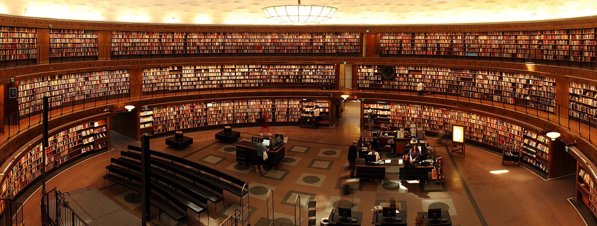

<div>
    
  
    <div class="title">
        <h2>HAKKIMIZDA</h2>

        Çalışma, öğrenme ve keşfetmenin merkezi olan CG Workspace, 7 Kasım 2021 tarihinden bu yana zengin
        kaynakları ve etkileyici ortamıyla bilgiye açılan bir kapı niteliği taşıyor. İsminden de
        anlaşılabileceği gibi, bu alan sadece bir kütüphane değil; aynı zamanda öğrenmeye yönelik bir
        yaşam
        alanı.

        CG Workspace, sadece kitapların bulunduğu bir mekan değil. Burası, zengin bir kaynak yelpazesi
        sunan,
        modern teknolojiyle donatılmış, dinamik ve katılımcı bir merkez. Teknoloji, sanat, bilim ve iş
        dünyasından kaynakları bir araya getirerek, herkesin ilgi alanlarına hitap etmeyi amaçlıyor.

        Bu mekanda, rahat çalışma alanları, geniş kütüphane koleksiyonu, interaktif eğitim materyalleri
        ve
        etkinliklerle dolu programlar bulabilirsiniz. Öğrenmeyi desteklemek adına düzenlenen atölyeler,
        seminerler ve etkinlikler, katılımcıların bilgiyi pratiğe dökmelerine ve birbirlerinden
        öğrenmelerine
        olanak sağlıyor.

        CG Workspace, sadece bilgiye erişimi kolaylaştırmakla kalmıyor, aynı zamanda bir topluluk
        oluşturmayı da
        hedefliyor. Burada bulunanlar, bilgi paylaşımı, deneyimlerini aktarma ve ortak ilgi alanları
        doğrultusunda etkileşimde bulunma şansı buluyorlar.

        Eğer siz de bilginin sonsuz dünyasında keşif yapmak, öğrenmek ve paylaşmak istiyorsanız, CG
        Workspace
        sizi bekliyor. Gelip bu dinamik ve ilham verici ortamda kendinizi bulabilir, bilgiye dair
        sınırlarınızı
        genişletebilirsiniz.

        Siz de CG Workspace’in büyüleyici dünyasına katılmak için bizi ziyaret edin, yeni keşiflere
        açılan
        kapıyı birlikte aralayalım!

    </div>

</div>